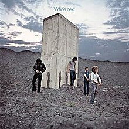

As rock music became the most popular style of music in the mid-1960s, both commercially and critically, it quickly entered a golden age now known as Classic Rock. Classic Rock is a loose term and its years of existence can be stretched to however long one would like, even all the way to the mid-1990s, but for the purpose of organization, this site will define Classic Rock as starting around 1965 and ending around 1980. The genre can also be subdivided in many different ways, but this site will keep it simple and focus on four styles/movements of classic rock: pop rock, psychedelic rock/pop, hard rock, and progressive rock.
Pop Rock
Pop rock really describes rock music that isn't experimental or heavy, and is mostly made to please the public. However, the best pop rock music also serves as an artistic statement, conveying as much emotion as other more challenging genres. The move towards this more artistic rock music started in the mid 1960s, with artists like the Beatles, Bob Dylan, the Kinks, and the Beach Boys. They started making albums that could be seen as a full statement, not just a collection of songs. The move into the 1970s opened pop rock up to more variations, such as glam rock (somewhere between pop rock and hard rock, with a lot of emphasis placed on the artists' visual presentation) and new wave (a more punk-oriented style of upbeat pop rock). The genre continued into the 2000s, but since it starts to become more and more subdivided as it progresses, this page only focuses on its early years, from 1965 to around 1975.
Best and Most Noteworthy Albums
Fig. 1Fig. 2Fig. 3Fig. 4Fig. 5Fig. 6
Fig. 1: The Kinks - The Kinks are the Village Green Preservation Society
Fig. 2: The Beatles - Abbey Road
Fig. 3: David Bowie - The Rise and Fall of Ziggy Stardust and the Spiders from Mars
Fig. 4: Big Star - #1 Record
Fig. 5: Fleetwood Mac - Rumours
Fig. 6: Bruce Springsteen - Born to Run
Psychedelia
In the mid 1960s, as artists began to make their music more artistic, many began experimenting with psychedelic drugs, which influenced their music. This coincided with the hippie movement, which brought the genre to huge popularity. However, by the 1970s, the movement had largely ended. Many other genres have taken influence from the psychedelic movement of the late 60s, and there has been a large resurgence of psychedelic music in the 21st century, but the genre peaked between the years of 1966 and 1973.
Best and Most Noteworthy Albums
Fig. 1Fig. 2Fig. 3Fig. 4Fig. 5Fig. 6
Fig. 1: The Beatles - Revolver
Fig. 2: The Beach Boys - Pet Sounds
Fig. 3: The Velvet Underground & Nico - The Velvet Underground & Nico
Fig. 4: Love - Forever Changes
Fig. 5: The Zombies - Odessey & Oracle
Fig. 6: Jimi Hendrix - Are You Experienced
Hard Rock
Hard rock originated in the late 1960s as some rock bands started playing rock music with more distortion and a more aggressive singing style. The earliest hard rock bands came out of the late-60s psychedelic rock scene, and the style was known as acid rock or garage rock. The movement really became its own genre in 1969/70, with Led Zeppelin leading the more melodic and bluesy style, and Black Sabbath playing a heavier style that would eventually lead to the creation of the metal genre. The genre mostly died by the early 1980s, as punk rock came to replace it as the go-to heavier style of rock.
Best and Most Noteworthy Albums
Fig. 1Fig. 2

Fig. 3Fig. 4Fig. 5Fig. 6
Fig. 1: Black Sabbath - Black Sabbath
Fig. 2: Led Zeppelin - Led Zeppelin IV
Fig. 3: The Who - Who's Next
Fig. 4: The Rolling Stones - Sticky Fingers
Fig. 5: The Doors - L.A. Woman
Fig. 6: Creedence Clearwater Revival - Cosmo's Factory
Progressive Rock
Progressive rock is a style of rock music that intends to push the genre forward by combining it with elements of jazz, classical music, and ambient sound. Artists tend to avoid standard pop conventions, so their songs tend to be much longer than the 3 to 4 minute average, and they are also known for their technical proficiency, with long instrumental sections and guitar solos being common practice. Progressive rock started out in the late 1960s as an offshoot of psychedelic rock, so the two genres share many characteristics, but it disappeared in the late 1970s as punk rock, prog rock's polar opposite, became the most popular style of rock music.
Best and Most Noteworthy Albums
Fig. 1Fig. 2Fig. 3Fig. 4Fig. 5Fig. 6
Fig. 1: King Crimson - In the Court of the Crimson King
Fig. 2: Pink Floyd - The Dark Side of the Moon
Fig. 3: Yes - Close to the Edge
Fig. 4: Can - Future Days
Fig. 5: Genesis - Selling England by the Pound
Fig. 6: David Bowie - Station to Station